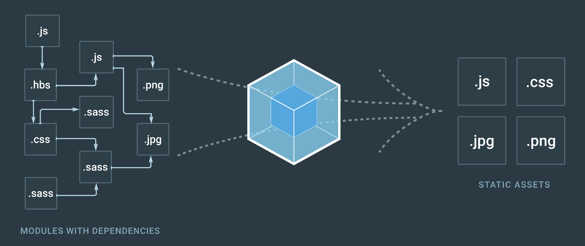

Webpack

Manage your build
Gulp || Grunt === task runners
Webpack === module bundler
Goals
Split the dependency tree into chunks loaded on demand
Keep initial loading time low
Every static asset should be able to be a module
Ability to integrate 3rd-party libraries as modules
Ability to customize nearly every part of the module bundler
Suited for big projects
Setup by configuration file
webpack.config.js
in project root directory
See https://webpack.js.org/configuration/ for all configuration options
Launch by command line
Build :
webpack
Start :
webpack-dev-server
Minimal setup example
Everything is a module
Even json files ? Yes !
Even images ? Yes !
Even CSS ? Yes !
Even... ? Yes !
Example with image and css require /!\ This needs loaders (see after)
Dependencies resolving
One or several entry points
Dependencies are detected through
require
Dependencies are resolved using configured loaders
Each required file should be processed by a loader (except native modules : .js and .json)
Context
The base directory for resolving entry points and loaders
context: path.resolve(__dirname, "src")
Entry point(s)
The point or points to enter the application
Loaders
Allow you to "convert" a file into a module
Is applied to a file if the filename match the loader "test" property
"test" property can be either a regex or a function
Is identifiable by its name
Has options (specific to each loader)
Loader configuration example
Small loader configuration example
Loaders
Json files does not need additional loader
Images and other assets need file-loader or url-loader
CSS needs css-loader
File or URL loader ?
Chaining loaders
Loaders can be chained
Applied in the opposite way you declare it
Loaders configuration
Configuration example with loaders
Code splitting
Webpack resolves dependencies (even dynamically)
Split build easily
Build part lazy loaded when needed
Use require.ensure
Code splitting
require.ensure example
Clever URI parsing
require("./i18n/" + lang + ".json") will require all the files in the ./i18n folder with the .json extension
Not so clever URI parsing
require(filePath) will require your whole project !!
Plugin system
Conclusion
Dependencies resolved from one or several entry points
Loaders are applied to transform everything in module